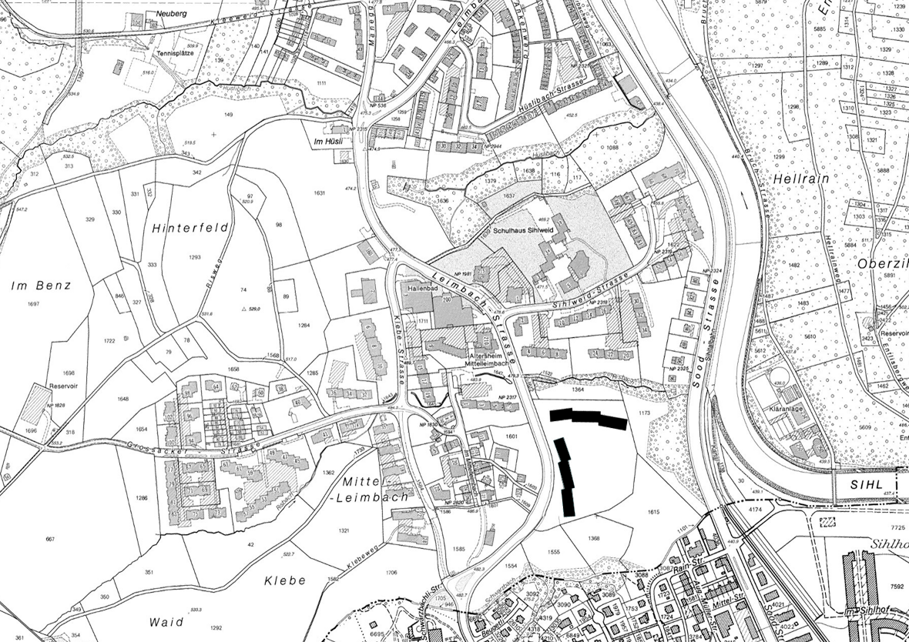
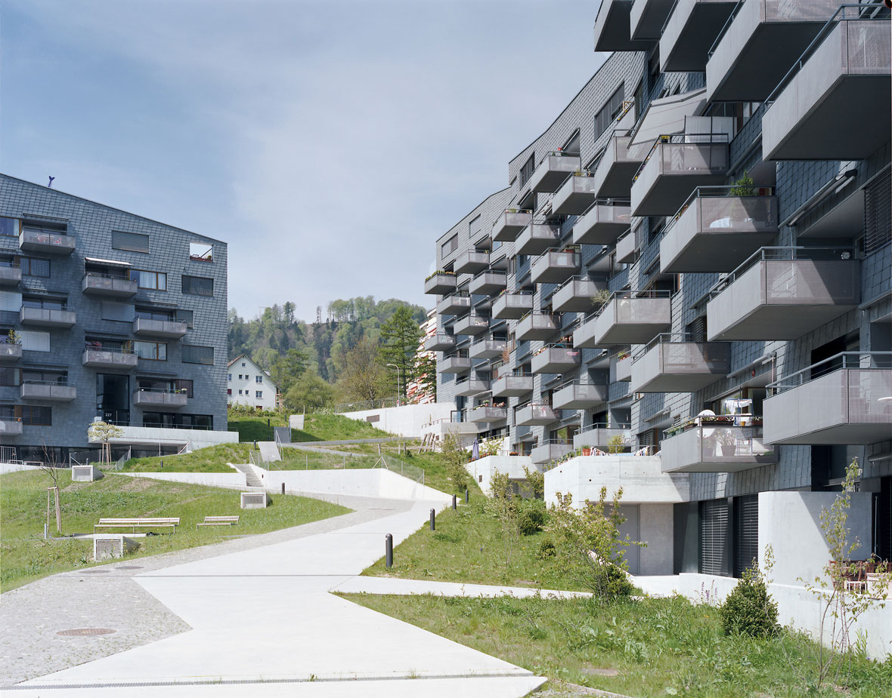
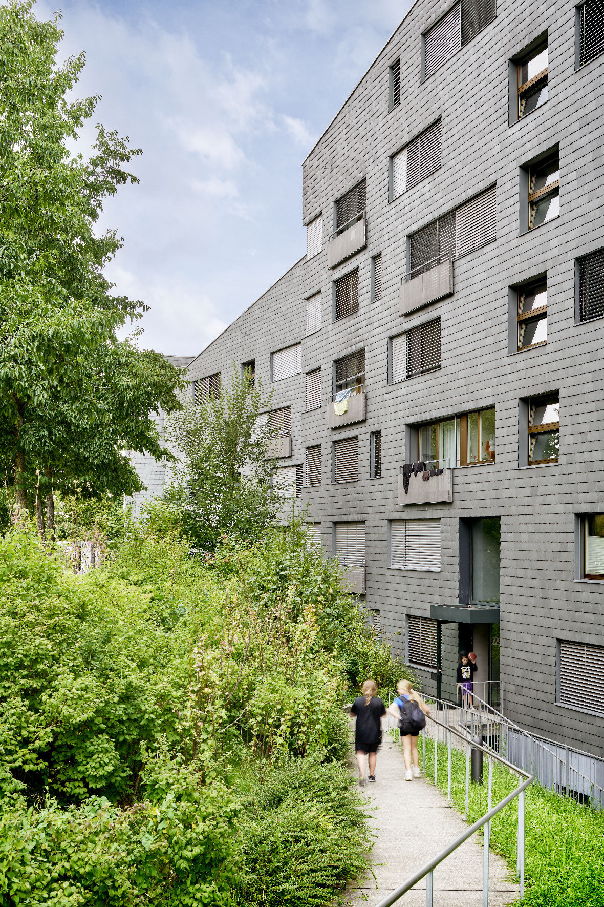
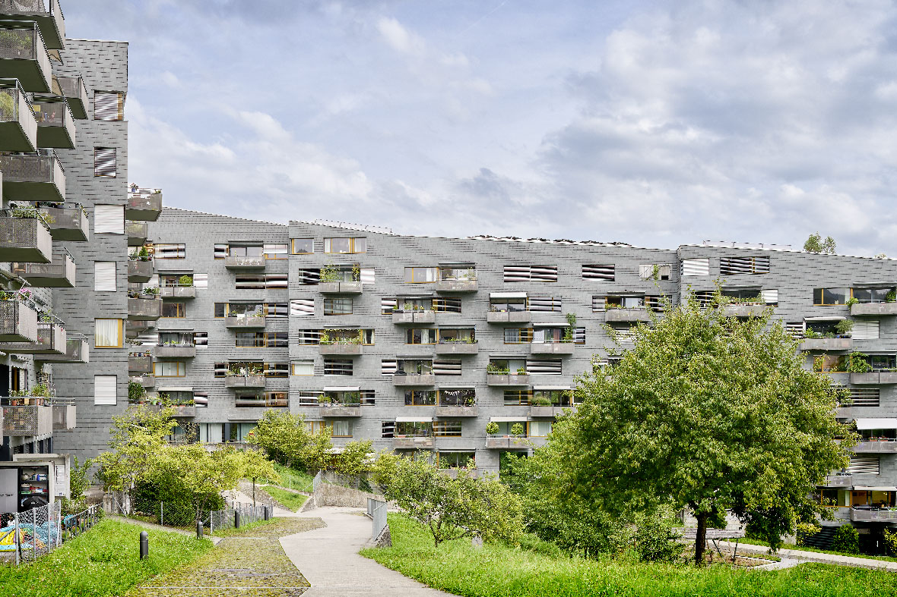
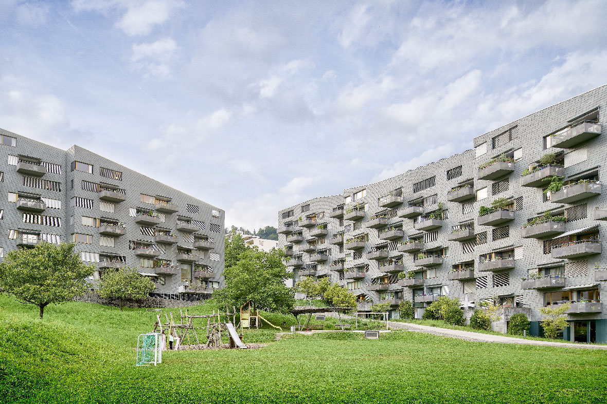
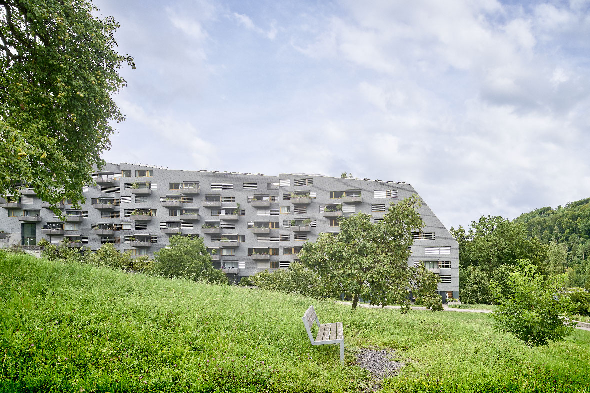

Von Süden durch das Sihltal kommend kündet sich die nahende Stadt Zürich durch die Hochhäuser von Leimbach und die neue, siebengeschossige Wohnsiedlung Leimbachstrasse an.
Die Wohnüberbauung ist ein Bekenntnis, dass auch an der Peripherie der Stadt prägnant gebaut werden kann, ohne in Monotonie zu fallen.
Die Wohnzeilen der beiden Genossenschaften besetzen den nördlichen und westlichen Rand des Grundstücks und zeichnen mit ihrer geschwungenen Dachlinie das Gelände nach.